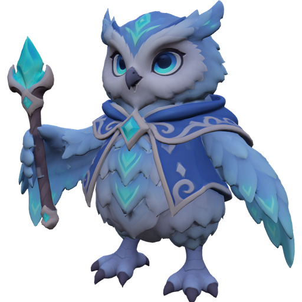

%0
Arena hazırlanıyor…
İpucu3 aynı kahraman birleşip ★2 olur; üç ★2 de ★3.

Oyuncu0 maç · 0 birincilik
0Sv. 0
Sezon 1Gök Kapısı
Efsaneler kaynaşır · Kut senin elinde
Çevrimiçi hayalet havuzu bağlıGüç satılmaz · bütün kahramanlar herkese açık
Zafer4/7
Tur6
Bu turun alametiKan Ayı — herkes +%20 hasar
7
Sıradaki rakipTur 6

SisAvcısı Gerçek1 210 kupa · 4 can
Karanlık yaralıları bitirir: ön sırayı sağlam tut.
Soyların
Takımın5/5 yuva · Tur 7'de 6
Düşman bu yönde
Ön sıra
Orta sıra
Arka sıra
Yedek 3/4Taşımak için boş yuvaya dokun
DükkânŞans: K1 %45 · K2 %40 · K3 %15
Rakip · Tur 6SisAvcısıKupa 1 210
Sen%72
0:18kalan
Rakip%41
Kan Ayıherkes +%20 hasar
Hız
ZAFER!Arena senin · 7 zafer
Tur geçmişi
Yeşil kazanılan, kırmızı kaybedilen tur.
Kupa
+40
Altın Lig'e 220 kupa kaldı
 Dağ Koçu Sv.2 · yeni çerçeve açıldı
Dağ Koçu Sv.2 · yeni çerçeve açıldıSon takımınDüello kodu ile arkadaşına at
Maçın yıldızıKaya Golemi × AnkaKaya Fırlat + Yeniden Doğuş · 1 840 hasar
KUT1-7GQ2-ANK9-XR4P-LM8Z-TW3E
Sırada
Eşleşme aralığı: 1 130 – 1 430 kupa
Haftalık görev: Anka'yı pasif olarak kullan 6/10
Haftalık görev: Anka'yı pasif olarak kullan 6/10
Kahramanlar ve soylar
Bütün kahramanlar herkese açık.
Ustalık yalnız görünüş kazandırır.
Ustalık yalnız görünüş kazandırır.
UstalıkSv. 23
Kahramanlar · 16■ yetenek · ■ pasif
Soylar2 ve 4 kahramanda açılır

Kut Arena tablet için tasarlandı; en iyi deneyim tablette.